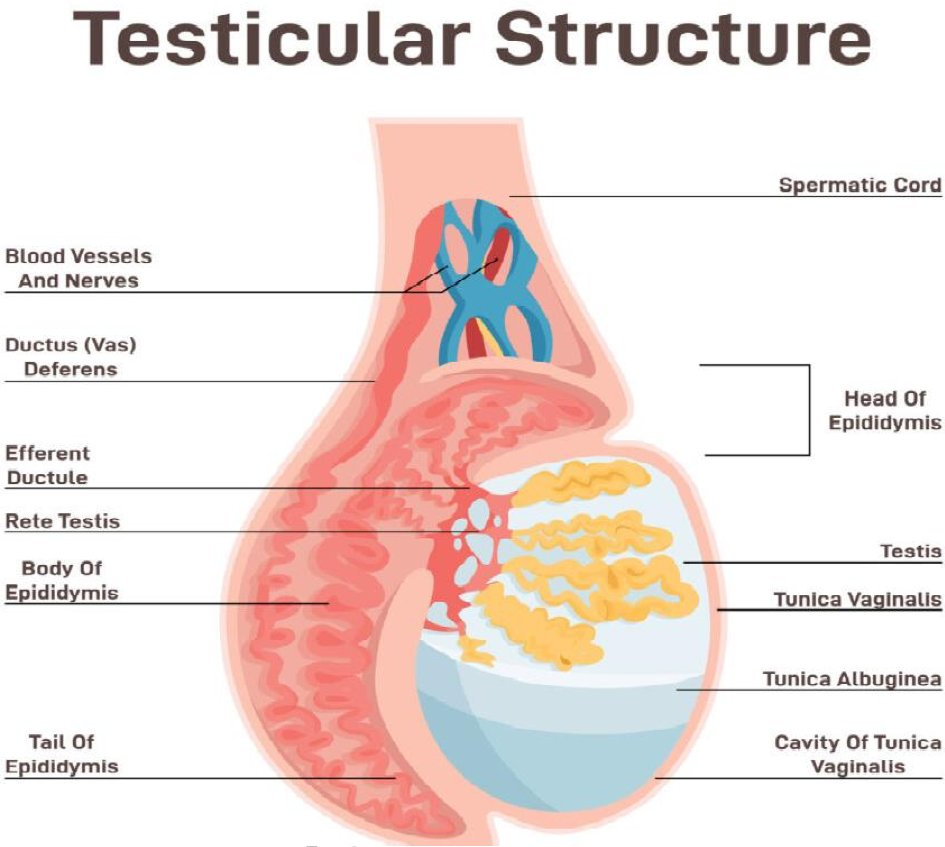
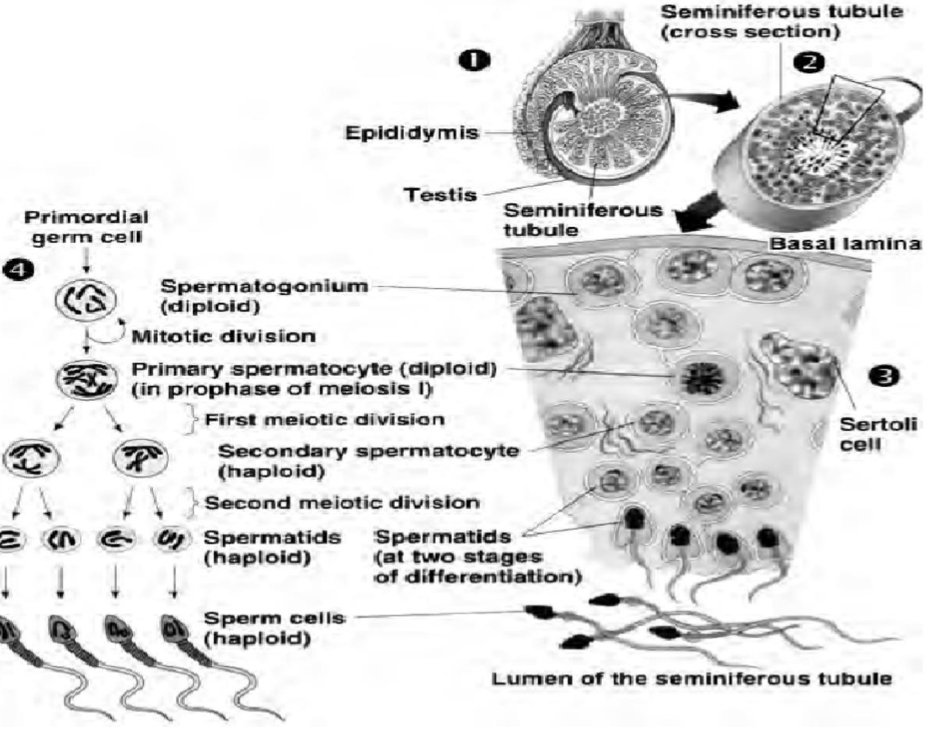
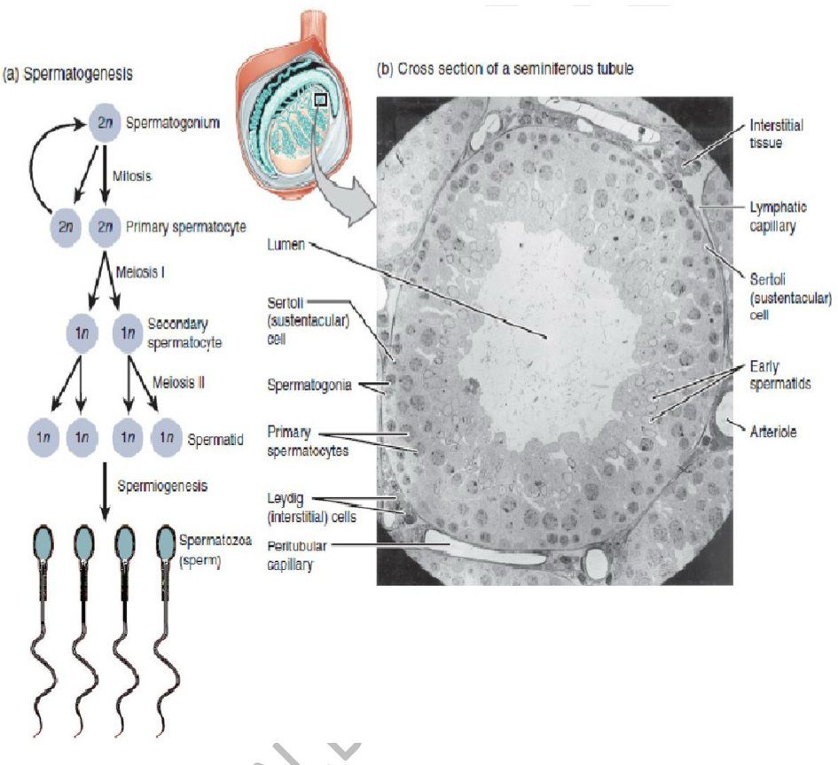
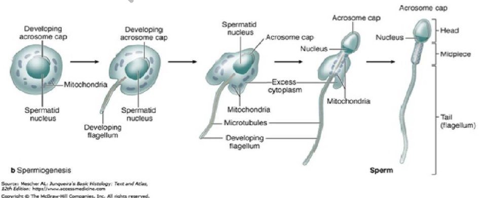
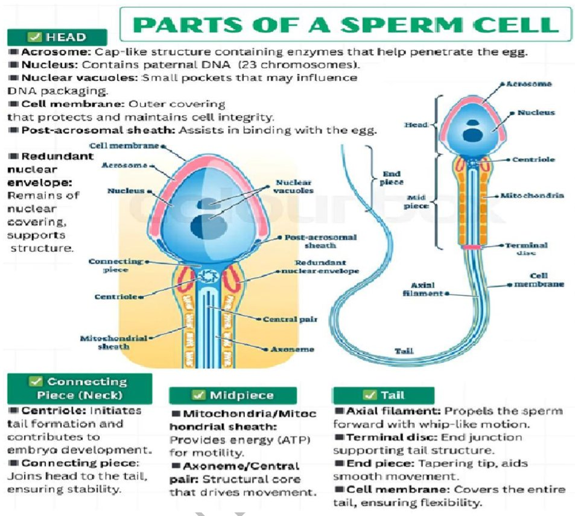
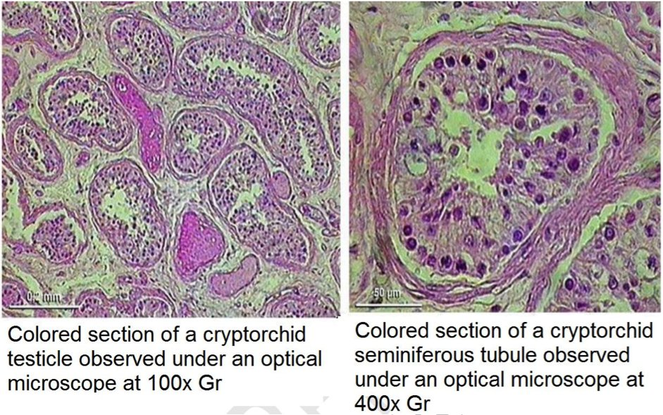
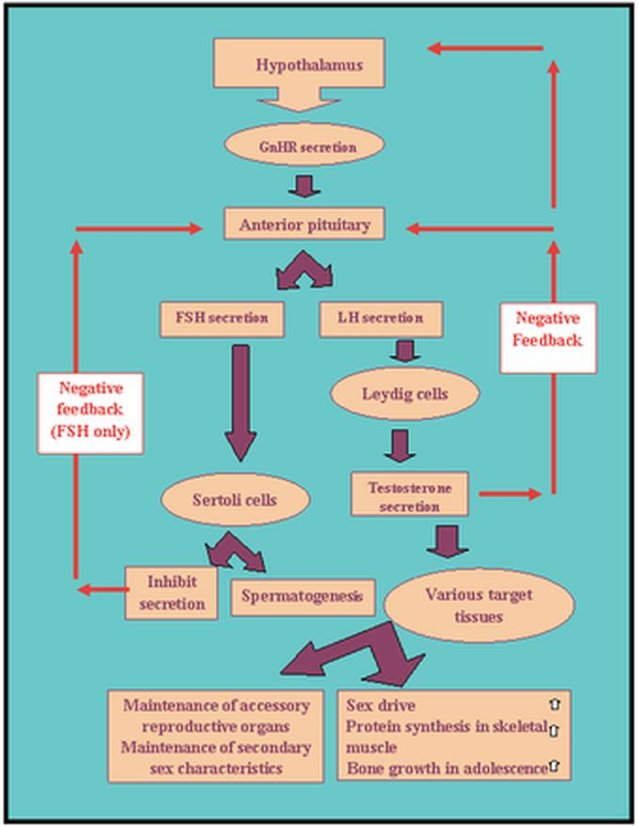

Spermatogenesis
- Essentials
- Gametogenesis
- Testis
- 3 phases
- Transport & maturation
- Spermatozoon
- Cryptorchidism
- Hormonal control
- Abnormalities & factors
- Exam traps
- Self-check
- Spermatogenesis takes place only in the seminiferous tubules of the testis, starts at puberty and is continuous until advanced age.
- 3 phases: multiplication (mitoses of spermatogonia, 2n) → maturation = meiosis (preceded by a growth phase) → differentiation = spermiogenesis (spermatid → spermatozoon, no division).
- 1 spermatogonium → 4 primary spermatocytes (2n) · 1 spermatocyte I → 2 spermatocytes II (n) → 4 spermatids (n): 2 divisions.
- Meiosis I = reductional (2n → n); meiosis II = equational.
- Spermiogenesis: cytoplasmic reduction, acrosome from Golgi vesicles, flagellum from the distal centriole. Mitochondria are in the middle piece.
- FSH → Sertoli (spermatogenesis, ABP, inhibin → − FSH). LH → Leydig (testosterone → − LH).
- Cryptorchid testis: no spermatozoa (sterility) but testosterone is maintained (secondary sexual characteristics kept).
I. Gametogenesis — introduction p. 1
- The life cycle alternates a haploid and a diploid phase. Two categories of cells in an adult: somatic cells (diploid, no meiosis) and the germ line (undergoes chromosome reduction).
- The resulting haploid functional cells are the gametes; the process that makes them is gametogenesis. Male gametes = spermatozoa; female gametes = ova.
- Gonocytes (primordial germ cells) appear during the first weeks of embryonic development.
- Oogenesis and spermatogenesis differ in timing and physiology but share meiosis: chromosomal maturation, genetic shuffling and halving of the genetic material.
II. The testis and the seminiferous tubule p. 2–4 2023-24 · 2024-25 · 2025-26
The testes are the site of spermatogenesis and of testosterone synthesis. On each side: a testis (capped by the epididymis, in the scrotum) → vas deferens (continues the epididymis) → ejaculatory duct.
Testis
- Ovoid, surrounded by the tunica albuginea (poorly extensible fibrous capsule).
- Albuginea thickened at the upper pole = mediastinum testis (corpus of Highmore), containing the rete testis.
- Septa delimit 200–300 lobules per testis, each with 1–4 seminiferous tubules.
Epididymis
- Caps the testis; from the upper pole: head, body, tail (decreasing thickness).
- Two duct types: efferent ductules (in the head) and the epididymal duct.
| Cell | Where | Features / role |
|---|---|---|
| Sertoli cells | Wall of the seminiferous tubule | Large, roughly pyramidal (conical), span the entire thickness of the epithelium, many cytoplasmic processes, linked by tight junctions. Carry the FSH receptors (see IV). |
| Germ cells | Basal compartment against the basement membrane, between Sertoli cells (junctions) | Layers from periphery to centre: spermatogonia → spermatocytes I → spermatocytes II → spermatids → spermatozoa |
| Leydig (interstitial) cells | Between the tubules, in loose connective tissue, in cords or isolated around capillaries | Endocrine: secrete androgens (testosterone) |


III. The 3 phases of spermatogenesis p. 4–6 2022-23 · 2023-24 · 2024-25 · 2025-26
| Phase | Cells | What happens | Ploidy |
|---|---|---|---|
| 1. Multiplication | Spermatogonia (stem cells at the periphery, on the basement membrane) | Successive mitoses: maintain the spermatogonial pool; the last one gives primary spermatocytes. 1 spermatogonium → 4 spermatocytes I | 2n → 2n |
| 2. Maturation (preceded by growth) | Spermatocytes I and II | Meiosis: spermatocyte I → (meiosis I, reductional) → 2 spermatocytes II → (meiosis II, equational) → 2 spermatids each. 1 spermatocyte I → 4 spermatids | 2n → n |
| 3. Differentiation = spermiogenesis | Spermatids | No division: spermatid → spermatozoon (structures for motility and for penetrating the ovum) | n |
Spermiogenesis is characterised by p. 5
- Cytoplasmic reduction of the spermatid;
- an acrosome formed by condensation of Golgi vesicles;
- a flagellum formed from microtubules arising from the distal centriole.


IV. Transport and maturation of spermatozoa p. 7 2022-23 · 2023-24
Spermatozoa leave the testis (rete testis → efferent ductules → epididymal duct) and are modified all along the genital tract. Spermatozoa made in the testis are barely motile. In the epididymis:
- they acquire motility, under androgens (testosterone) from the Leydig cells;
- the proteins that bind the zona pellucida become functional;
- they are decapacitated by the seminal fluid: they temporarily lose the ability to fuse with other membranes.
V. The spermatozoon p. 8–9 2022-23 · 2024-25
A very elongated cell with 3 parts visible under the light microscope: the head, the neck (narrow portion joining head and flagellum) and the flagellum.
| Part | Content |
|---|---|
| Head | Roughly ovoid, slightly flattened: nucleus (occupies most of the head) + acrosome, enclosed by a thin hyaloplasmic layer and the plasma membrane (conventional, no special features). |
| Acrosome | Flattened vesicle covering the anterior two-thirds of the nucleus; finely granular. Hydrolytic enzymes: hyaluronidases, acid phosphatase, neutral proteinases (acrosin), acid proteinases, CPE (Corona Penetrating Enzyme)… → crossing the oocyte envelopes ("enzymatic capital"). |
| Middle piece | Narrower; contains the centriole that gives rise to the flagellum and mitochondria in a helix around it → energy for flagellar movement ("energy capital"). |
| Flagellum | From the neck, 3 parts of decreasing diameter: middle piece → principal piece → end piece. |

Conclusion of the course p. 12–13: meiosis separates the XY pair → equal numbers of 22 + X and 22 + Y spermatozoa, indistinguishable morphologically but separable in vitro. The spermatozoon keeps only the essentials: a highly compacted haploid nucleus (easy transport, protection against genotoxic agents), the acrosome, the flagellar apparatus (the female gamete is immobile), the mitochondrial apparatus and the membrane/cytoplasmic proteins of fertilization.
VI. Testicular abnormality: cryptorchidism p. 9–10 2023-24
- One of the most common abnormalities at birth: ~5% of newborn boys in Europe; 30% of premature boys have at least one undescended testis. Often associated with disorders of sexual differentiation, renal/urethral malformations and dysplasias.
- The testis makes two products: spermatozoa (in the tubules) and testosterone (interstitial cells between the tubules).
- Normal spermatogenesis needs a slight cooling, obtained when the testes migrate into the scrotum.

VII. Neuroendocrine control p. 10–11 2023-24 · 2024-25 · 2025-26
GnRH is the "conductor": produced in a pulsatile way by hypothalamic neurons (greatly increased at puberty), it triggers pituitary secretion of FSH and LH.
- activates spermatogenesis;
- stimulates formation of ABP (Androgen-Binding Protein);
- triggers secretion of inhibin → negative feedback on FSH (on hypothalamic neurons by ↓ GnRH, or directly on pituitary gonadotroph cells).
- most testosterone enters the cytoplasm and binds ABP → development of the seminal epithelium, function of the genital tract (seminal fluid);
- free testosterone → blood: + on the genital tract and accessory glands, and negative feedback on LH (hypothalamus or pituitary).

VIII. Sperm abnormalities and factors influencing spermatogenesis p. 11–12
Sperm abnormalities are the most common cause of male infertility: spermatozoa immature, abnormally shaped, poorly motile, or too few.
| Harmful factor | Detail |
|---|---|
| Infections (e.g. mumps) | Genital infection or testicular atrophy; ~25% of men who catch mumps after puberty become infertile |
| Endocrine disorders | Only 2–5% of male infertility: insufficient FSH–LH |
| Immune problems | Antibodies against one's own spermatozoa → poor motility or agglutination |
| Environment, lifestyle | Radiation, some anticancer treatments (temporary or permanent) |
| Anatomical abnormalities | Obstruction of the genital tract (congenital/genetic, or after infection/inflammation) |
Exam traps
- "The spermatid divides into a spermatozoon" — false: spermiogenesis has no division. 2022-23 · 2023-24
- "One spermatocyte I gives 16 spermatids" / "3 or 4 divisions are needed" — false: 4 spermatids, 2 divisions. 2023-24 · 2024-25
- "Male meiosis is preceded by a differentiation phase" — false: by a growth phase. "Meiosis II is completed at fertilization" — false for the male. 2024-25
- "Proliferation" is not one of the phases (multiplication, growth, maturation, differentiation). 2024-25
- "Spermiogenesis takes place in the epididymis / prostate" — false: in the testis. 2023-24
- "The energy capital is in the end piece" — false: mitochondria are in the middle piece. 2022-23
- "Sertoli cells are stimulated by LH" / "secrete testosterone" — false: FSH acts on Sertoli; Leydig cells make testosterone. 2023-24 · 2025-26
- "Sertoli cells don't take part in regulation" — false: they secrete inhibin. 2023-24 · 2025-26
- "The hypothalamus secretes hCG" — false: GnRH. 2024-25
- "Cryptorchid testes: testosterone production is blocked" / "the gonad's only function is gamete production" — false. 2023-24
- "Spermatogonia are haploid" / "disappear at puberty" — false: diploid, active from puberty. 2022-23 · 2025-26